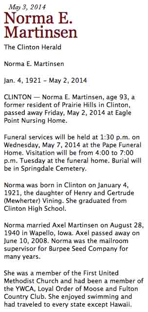
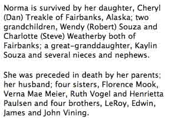

Census Data
| 1910 | 1920 | 1930 | 1940 | |
| Henry Calvin Vining | 29 | 36 | 47 | 57 |
| Gertrude Delia (Mewherter) Vining | 26 | 36 | 46 | 56 |
| Florence Bernice Vining | 5 | 15 | 25 [see note below] |
[living? in separate household] |
| Edwin Calvin Vining | 4 | 14 | 24 | [living? in separate household] |
| LeRoy Vining | 1 y., 8 m. | 11 | dead | |
| Verna Mae Vining | 8 | 18 | [living? in separate household] | |
| Ruth Juanita Vining | 5 | 15 | 25 | |
| Henrietta Janette Vining | 2 y., 1 m. | 12 | 22 [see note below] |
|
| Norma Elane Vining | 9 | 19 | ||
| James Eugene Vining | 6 | 16 | ||
| John Henry Vining | 3 y., 7 m. | 13 |


Death Data
Obituary for Norma Elane (Vining) Martinswen, daughter of Henry Calvin Vining and Gertrude Delia (Mewherter) Vining:
